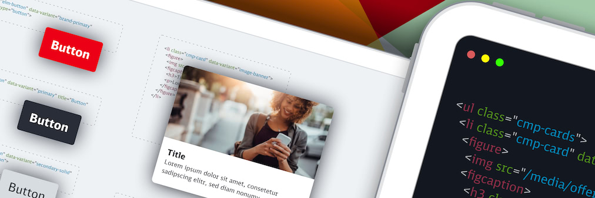

Starke digitale Produkte
Das DB UI Ökosystem beschleunigt die Entwicklung digitaler Produkte der Deutschen Bahn – offen für alle Einsätze, kompatibel zu den Marken-Standards und zugänglich, nehmen wir uns nichts weniger vor, als die Demokratisierung der Entwicklung bestmöglich zu unterstützen.
Personenverkehr und DB Systel haben ihre Design Systeme Version für Web in der Version 2.0 der Standard Web Components zusammengeführt. Unser Ziel ist eine einheitliche Basis UX im Sinne der Modernen Ikone für Kunden und Mitarbeiteranwendungen. Um unser Design End 2 End von Konzeption über Design bis zur Implementierung konsistent zu halten, wird das 2.0 Design System Web auch in Code von DB Systel und Reisendeninformation umgesetzt.
Um vor allem Mitarbeitende der Bereiche Entwicklung, Konzeption & Design und Content-Produktion & -Pflege zu befähigen, allerbeste digitale Erlebnisse zu erstellen und zu betreiben.
Produktlandschaft
-

DB UI Base
Generelle Assets und Design Tokens für die vielfältige Nutzung in Web als auch Projekten nativer App-Entwicklung
-

DB UI Core
Robuste HTML UI Komponenten, wiederverwendbare visuelle Styles und mächtige Werkzeuge
-

DB UI Elements – Web Components
Auf Web-Standards basierende universelle JavaScript UI Komponenten
-
DB UI Elements – JS Framework Komponenten
In Angular, React und Vue direkt konsumierbare Komponenten
Durch DB UI Base liefern wir generelle Assets und Design Tokens für die vielfältige Nutzung in Web als auch Projekten nativer App-Entwicklung.
Mit DB UI Core bieten wir als Entwicklungs-Basis robuste HTML UI Komponenten, wiederverwendbare visuelle Styles und mächtige Werkzeuge.
Speziell für die JavaScript Anwendungsentwicklung stellen wir zudem mit DB UI Elements universelle UI Komponenten zur Verfügung – einerseits auf Standards basierende Web Components, und andererseits für die großen JS Frameworks direkt konsumierbare Komponenten.
Core principals
-
Consistent & Compliant
DB UI Core is based on the DB UX Design System, that are the guidelines for any Personenverkehr Customer and Deutsche Bahn Enterprise website and web applications.
-
Accessible
DB UI Core leverages semantic HTML, ARIA roles, states and properties to apply our styles wherever possible, thus enforcing correct, accessible markup. And we're quality checking this in partnership with the Team Digital Accessibility
-
Declarative
DB UI Core uses declarative selectors instead of visual helpers to ensure our HTML class names and structure are human read- and understandable, lean, performant and so much easier to update.
-
Decoupled
DB UI Core is decoupled from the JavaScript layer, to implement the patterns in any Web Development technology context; and we're providing universal Web Components and native JS framework components with DB UI Elements as well.
-
Evergreen
As DB UX Design System evolves, so does DB UI Core, meaning apps only need to keep their DB UI Core package updated to ensure the latest look and feel.
-
Community driven
A platform providing the space and technology for a common basis of curated components; their development is mainly driven by the community, adapted out of the work done in projects and through the huge amount of feedback.
How to use
For using DB UI Core, you need to install it as a dependency to your
project and then link it within your HTML / CSS.
Please have a look into the
Docs / Get Started(docs)
for detailed instructions.
In case that you're developing a JavaScript application, please have a
look at
DB UI Elements, that's based on DB UI Core and provides Web Components for easier
integration into this tech context.
More information
Additionally we'll provide some more information over time regrading the whole ecosystem:
- DB UX Design System documentation within the DB Marketingportal (german)
- Confluence / Base Wiki – "Technische Umsetzung des Enterprise UI Design Systems" (german, only available internally)
- Confluence – Web UI Component Library (only available internally)
- Changelog
- Architectural Decision Records
Give us your feedback!
This is only the beta version of our framework and we really want your
feedback – either within the
DB UI Channel by Web Dev Community in Microsoft Teams (only
available DB internally)
, or directly at
db-ux-designsystem@deutschebahn.com
.
We're particularly keen to add as many examples to the behaviours as
possible, to further clarify them.
Things to keep in mind
Developed for and driven by the community
This is mainly a platform providing the space and technology for a common basis of curated components; their development is mainly driven by the community, adapted out of the work done in projects and through the huge amount of feedback that we're gaining out of the community. So please support us in any way possible, this is greatly appreciated!